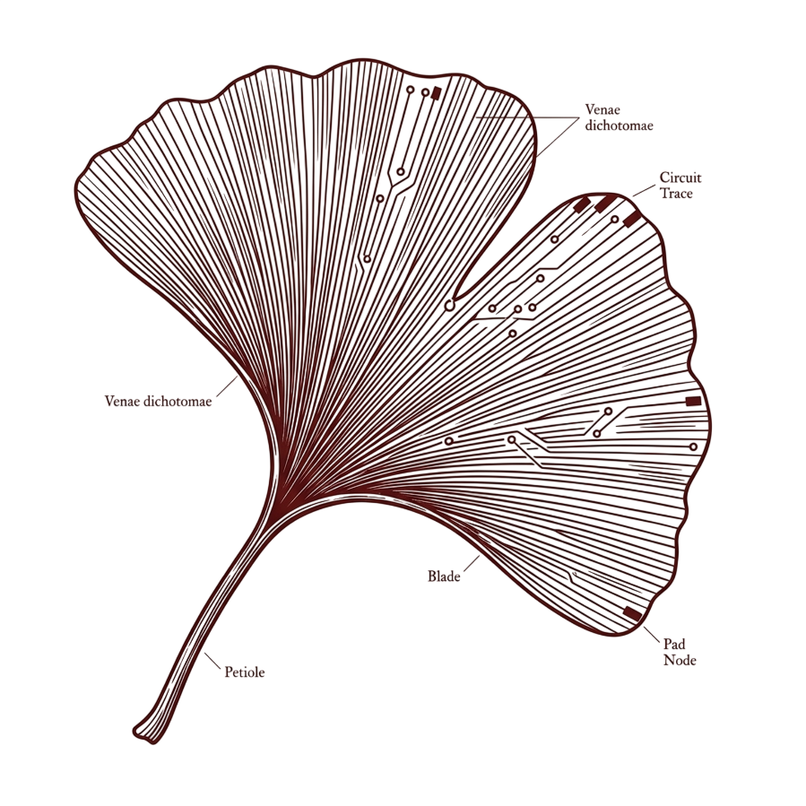

11,4
Резюме на вакансию
Исторический максимум hh-индекса, март 2026. За полтора года — трёхкратный рост.
hh.ru Research
Стандартные инструменты отбора утратили предиктивную способность. Мы проектируем новые под задачи и ценности работодателя.

Каждые несколько лет рынок труда проходит точку перелома. Не постепенное изменение, а качественный сдвиг, после которого старые инструменты перестают работать.
Мы находимся именно в такой точке. Рынок кандидата сменился рынком работодателя. Резюме и вакансии идеализируют стороны, а вопросы и ответы на собеседованиях пишут языковые модели с обеих сторон. Инструменты рекрутинга перестали отличать одного кандидата от другого — и сам процесс отбора потерял структуру.
Новые стандарты оценки формируются прямо сейчас — в практике команд, которые работают с этой задачей. Мы из их числа.
Исторический максимум hh-индекса, март 2026. За полтора года — трёхкратный рост.
Срок запуска и стабилизации HR-системы в крупной компании. К моменту внедрения рынок уже другой.
Доля российских компаний с зрелой автоматизацией HR. У 42% основные процессы до сих пор выполняются вручную.
Каждые 15–20 лет набор инструментов найма обновляется. Привычные сегодня инструменты когда-то были вызовом.
Вакансии публиковали в газетах. Нанимали через личные связи. Резюме как формата не существовало — о себе рассказывали устно, при встрече.
Современный формат резюме утвердился не сразу. И соискатели, и нанимающие руководители долго сомневались: зачем унифицированная форма, если можно просто поговорить. Но постепенно резюме стало общим языком между кандидатом и работодателем — и осталось им на тридцать лет.
Когда появились онлайн-платформы для поиска работы, компании поначалу продолжали давать объявления и в газеты, и в интернете — «так надёжнее». Но к концу десятилетия газеты ушли. Потому что платформы были эффективнее.
Кандидаты готовятся к интервью с помощью языковых моделей. Резюме пишут алгоритмы. Стандартные вопросы на собеседовании кандидат видел в десятке подготовительных материалов. Привычные инструменты оценки больше не показывают, что человек действительно может и чего хочет.
Сейчас новые инструменты найма создаются в живой практике — там, где команды разбирают реальные задачи работодателей и пересобирают процесс оценки. Через несколько лет эти решения станут отраслевой нормой.
Кандидатов в воронке много, но качественных наймов больше не становится. Затраты на подбор растут, результат тот же. Стандартные оценочные процедуры не отличают подготовленного кандидата от подходящего.
Реорганизация, M&A, пересмотр операционной модели. Кадровые решения принимаются быстро, в условиях политического давления и неполной информации. Нужен способ оценить людей объективно — так, чтобы решение можно было защитить.
Открытие новых направлений, региональная экспансия, плановый массовый набор. Процесс не справляется с объёмом без потери качества. Нужна воспроизводимая модель, которая работает одинаково — независимо от того, какой рекрутер и какой руководитель проводит оценку.
Во многих компаниях найм формально описан, но работает иначе. Заявки приходят через мессенджеры, аналитика лежит в разрозненных таблицах, ключевые договорённости никто не фиксирует. Разрыв между регламентом и практикой не виден — и поэтому не устраняется.
Компании оптимизируют вакансии алгоритмами, генерируют привлекательные описания и шлифуют позиционирование. Кандидат откликается на образ, а выходит на другую работу. Расхождение обнаруживается в первые недели — и становится источником ранней текучести, который не виден в стандартных метриках воронки.
У большинства нанимающих руководителей нет ни методологии, ни инструментов оценки — только опыт и интуиция. Там, где регламенты есть, они перегружены и в работе не используются. От менеджера по факту ждут экспертизы рекрутера — без соответствующей подготовки.
Не адаптируем шаблон, не настраиваем коробочное решение. Каждая компания, задача и рынок требуют своей методики, своих механик и своей логики оценки.
Форсированный выбор, сценарии из реальных рабочих ситуаций, практические задачи, оценка чужого поведения, ранжирование под давлением времени. Методика собирается под задачу, а не наоборот.
Открытые ответы кандидата анализирует языковая модель — видит паттерн мышления, а не только выбранный вариант. Механики с таймингом позволяют прогнозировать реальное поведение. На выходе — скоринг, дословные ответы и комментарий по каждому блоку оценки.
Отдельно стоящее решение или встраивание в действующую HR-архитектуру. Формат обсуждается в начале проекта.
Два демо — чтобы увидеть подход на своём опыте. Решите задачу найма и пройдите оценку сами.
45 минут. Разбираем вашу ситуацию, задачу и контекст. По итогу — понимание того, нужен ли вам отдельный инструмент, и если да — какого типа.
1 неделя. После диагностики — подготовка КП с объёмом работы, сроками и стоимостью. При подтверждении объёма — подписываем договор и переходим к проектированию.
2-3 недели. Формулируем задачу в техническом виде, выбираем методологию (какие техники оценки, какие механики), согласовываем состав инструмента. На выходе — спецификация и план.
От 4 до 12 недель в зависимости от сложности. Собираем инструмент, тестируем на пилотной группе, калибруем алгоритмы оценки. Вы видите промежуточные версии и формируете итоговый результат вместе с нами.
Запуск инструмента в вашем процессе, обучение рекрутеров и менеджеров, аналитика первых недель использования. Дальше — техническое сопровождение и обновления по договорённости.
НКО «Люди. Бизнес. Будущее.» объединяет HR-директоров и экспертов рынка труда, которые работают с задачами работодателей: исследование рынка, формирование отраслевых стандартов, продвижение HR-повестки в СМИ.
Исследовательская лаборатория — направление, которое превращает исследования рынка труда в прикладные инструменты для конкретных компаний.
Анастасия Юрлова — основатель и директор НКО «Люди. Бизнес. Будущее.», руководитель Исследовательской лаборатории.
15 лет в HR крупного бизнеса. В Сбербанке (300 000+ сотрудников, 52 000 наймов в год) перевела функцию подбора на agile, собрала 14 продуктовых команд, подняла удовлетворённость внутренних клиентов с 37% до 77%. Возглавляла подбор, развитие и удержание в ПИК (25 000+ сотрудников). С 2024 — HR-директор группы HR-компаний, руководит проектами трансформации. В executive search с 2011 года, начинала в Kontakt InterSearch.
Готовые HR-tech платформы агрегируют десятки модулей под усреднённого клиента. Большинство компаний использует 10–15% функционала, а ключевые для их задачи возможности либо отсутствуют, либо не поддаются адаптации. Инструмент под задачу строится в обратной логике: от требований компании — к составу, а не наоборот.
Стоимость определяется сложностью инструмента, объёмом методологической работы и форматом внедрения. Расчёт готовится после диагностической встречи, когда сформулированы задача и контекст.
Инструменты Исследовательской лаборатории проектируются с учётом существующей HR-архитектуры и встраиваются в неё. Замена действующих систем не требуется.
Все данные остаются в контуре заказчика. Исследовательская лаборатория не хранит результаты оценки, не копирует базы кандидатов, не использует данные вне проекта. Техническая архитектура инструмента проектируется под требования информационной безопасности компании-заказчика.
По договору заказчику передаётся неисключительное право использования. Доработки и развитие инструмента могут вестись как командой Исследовательской лаборатории, так и силами заказчика или сторонних подрядчиков. Зависимости от единственного вендора не возникает.
Больше, чем обычно предполагается на старте. Проект требует регулярных рабочих сессий с ключевыми стейкхолдерами — не для формального согласования, а для совместной проработки задачи и методологии. На этапе проектирования — одна-две встречи в неделю, на этапе разработки — участие в тестировании промежуточных версий, на внедрении — обучение внутренней команды. Точный объём определяется на диагностической встрече.